打卡就在 LINE 官方帳號「如菓室內設計」聊天室下方的這 4 個大按鈕。
規則以系統設定為準；有疑問直接問老闆。
全部約 5 分鐘。做完以後，每天只要點選單、按一下就好。
LINE → 主頁 → 右上角 加入好友 → 搜尋 → 選 ID → 輸入：
@496qcmkk → 加入
LINE 畫面依版本可能略有不同，找「加入好友」就對了。
聊天室下方會出現 4 個大按鈕。要打卡就點「上班打卡」或「下班打卡」。
第一次打開打卡頁，LINE 會詢問是否允許這個頁面使用你的 LINE 帳號資料（用來確認是你本人）。按 許可 即可，之後不會再問。
第一次打開會出現同意書，請閱讀後按「我已閱讀並同意」。
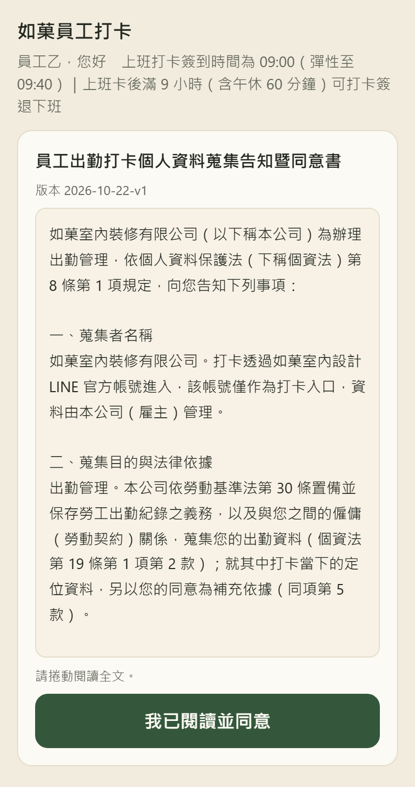
沒開定位就無法打卡。依你的手機照下面設定：
| 手機 | 設定路徑 |
|---|---|
| iPhone | 設定 → 隱私權與安全性 → 定位服務 → LINE 選「使用 App 期間」，並打開「精確位置」。 |
| Android | 設定 → 應用程式 → LINE → 權限 → 位置 選「僅在使用時允許」（部分手機寫「僅在使用應用程式時允許」），並打開「使用精確位置」。 |
第一次按打卡時，手機若跳出「是否允許使用位置」，請按 允許。
到公司後再按（公司 200 公尺內）。
打開後是「上班」分頁。上方會寫今天的上班規則。
這時「距公司」顯示 — 是正常的：還沒按之前不會定位。
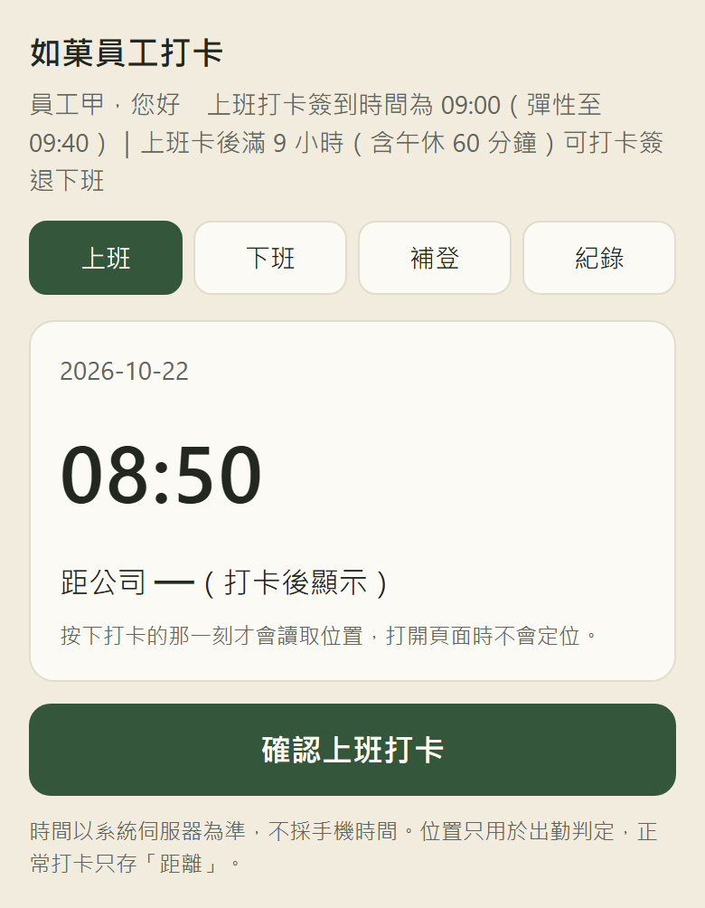
只要按 一次。系統在這一刻讀位置並送出。
成功會看到：
「上班打卡成功 08:50｜距公司 23 公尺 今天 17:50 後可下班」
遲到時訊息會加註「（遲到 xx 分）」。
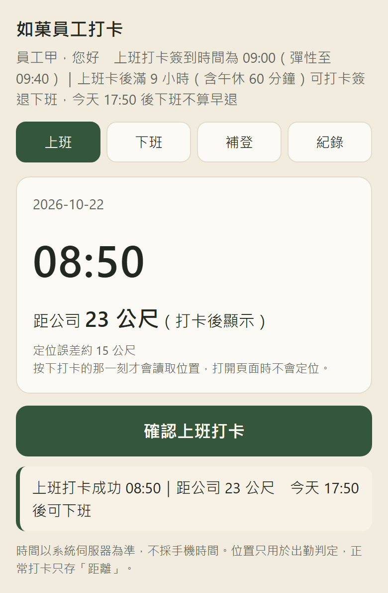
※ 截圖為測試畫面，姓名「員工甲」、時間與距離皆為示意。
離開公司前按（一樣要在公司 200 公尺內）。
上方會寫「今天 xx:xx 後下班不算早退」，這個時間＝你的上班卡時間＋9 小時。
成功會顯示「下班打卡成功 xx:xx」；太早按會加註「（早退 xx 分）」。
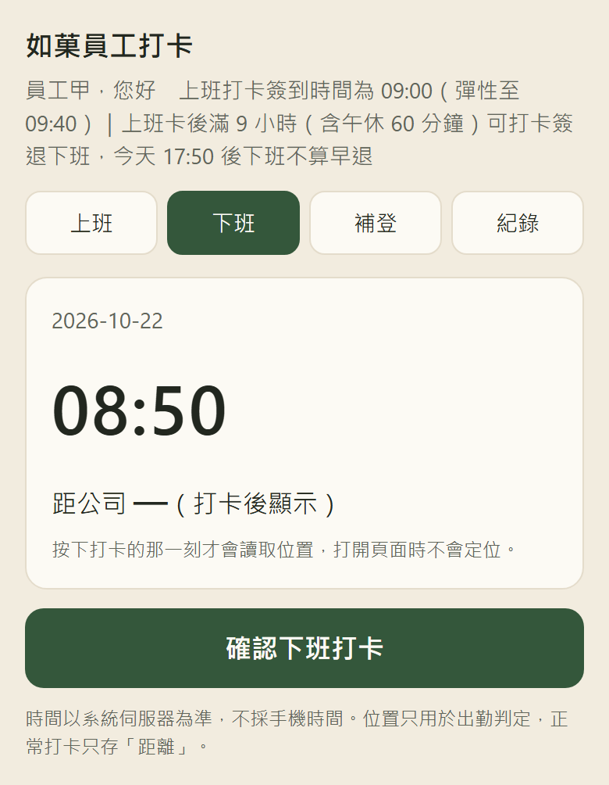
| 上班卡 | 幾點後下班不算早退 | 說明 |
|---|---|---|
| 08:50 | 17:50 | 08:50 ＋ 9 小時（含午休 60 分鐘） |
| 09:30 | 18:30 | 09:30 才到，18:29 下班就算早退 1 分 |
| 09:40 | 18:40 | 09:40 仍不算遲到，下班時間跟著往後 |
| 沒打上班卡 | 18:00 | 當天沒有上班卡時，以 18:00 判定 |
看紅色框裡的字，對照下面處理。打卡失敗＝沒有留下紀錄，請照下面處理。
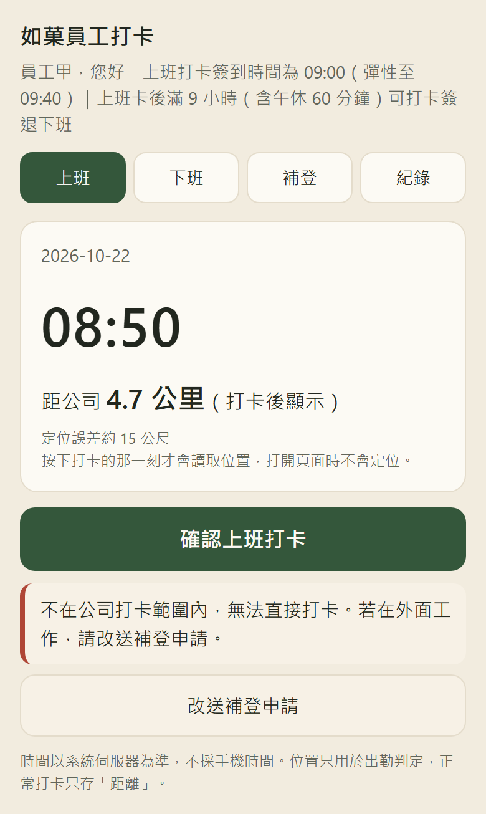
「不在公司打卡範圍內，無法直接打卡。若在外面工作，請改送補登申請。」
畫面會顯示你離公司多遠（例：距公司 4.7 公里）。
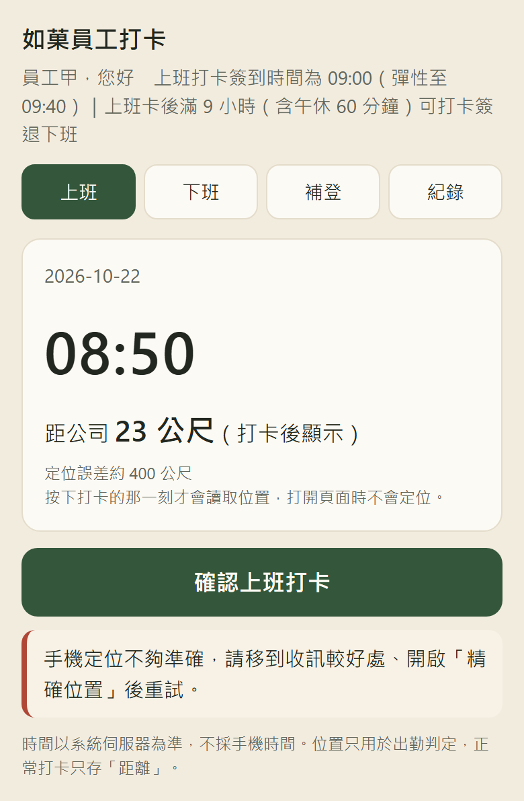
「手機定位不夠準確，請移到收訊較好處、開啟『精確位置』後重試。」
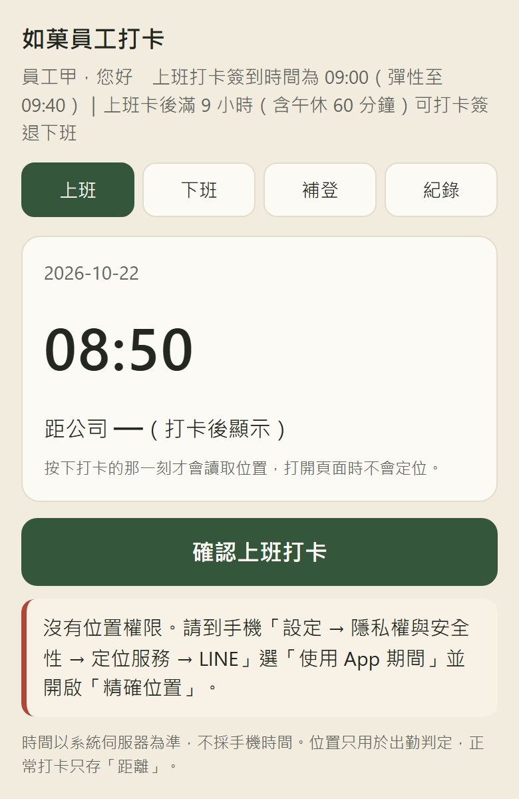
「沒有位置權限。請到手機『設定 → 隱私權與安全性 → 定位服務 → LINE』…」
手機沒有允許 LINE 使用定位。照第 4 頁的設定打開：
設定好回到打卡頁，再按一次。
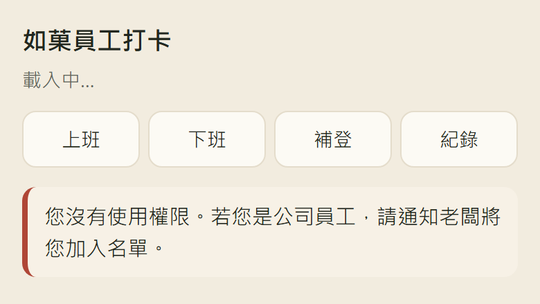
「您沒有使用權限。若您是公司員工，請通知老闆將您加入名單。」
你的 LINE 還沒被加進員工名單。請跟老闆說，老闆加好後再試。
| 畫面寫 | 怎麼做 |
|---|---|
| 目前讀不到位置／讀不到有效的位置／定位逾時／定位失敗 | 確認已允許定位（第 4 頁），移到收訊好的地方，再按一次。 |
| 網路異常，請確認連線後重試。 | 檢查行動網路或 Wi-Fi，再按一次。 |
| 登入已過期，請回 LINE 重新開啟打卡頁。 | 關掉頁面，回聊天室重新點選單。 |
| 系統忙碌，請稍後再試… | 等一下再試；一直出現就告訴老闆。 |
忘了打卡、直接去案場、超出範圍打不進去時使用。送出後由老闆審核。
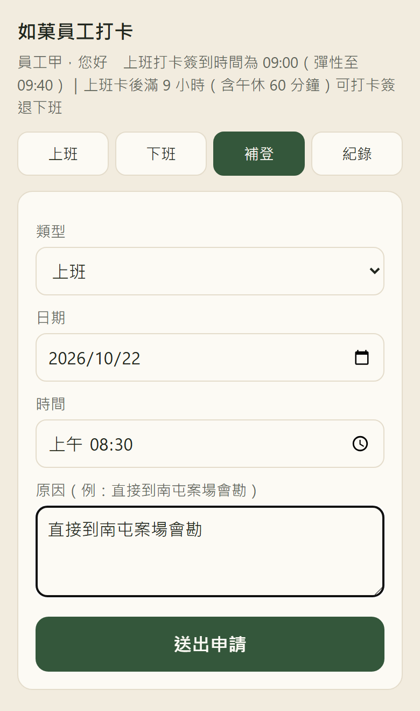
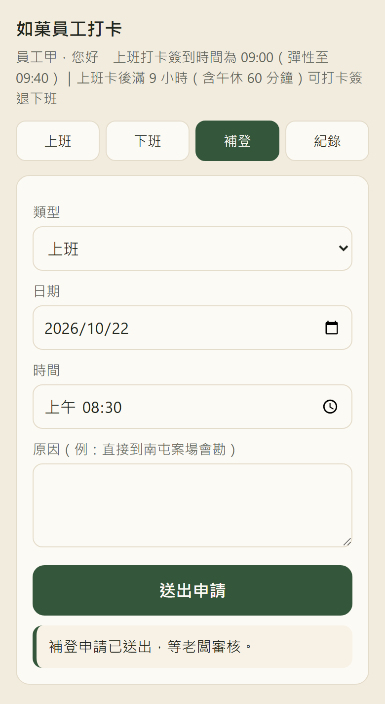
點選單「我的紀錄」，看自己這個月的出勤。只看得到自己的。
※ 右圖為測試資料示意，非真實出勤。
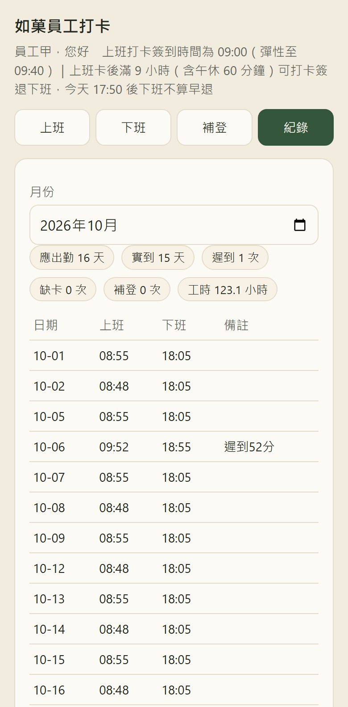
要請假就用手機送申請，不用傳訊息給老闆。老闆在 LINE 核准後，結果會通知你。
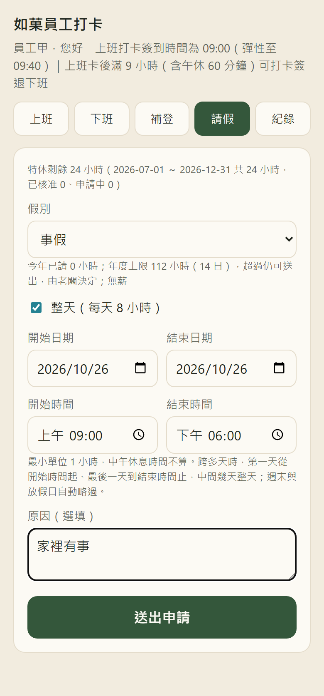
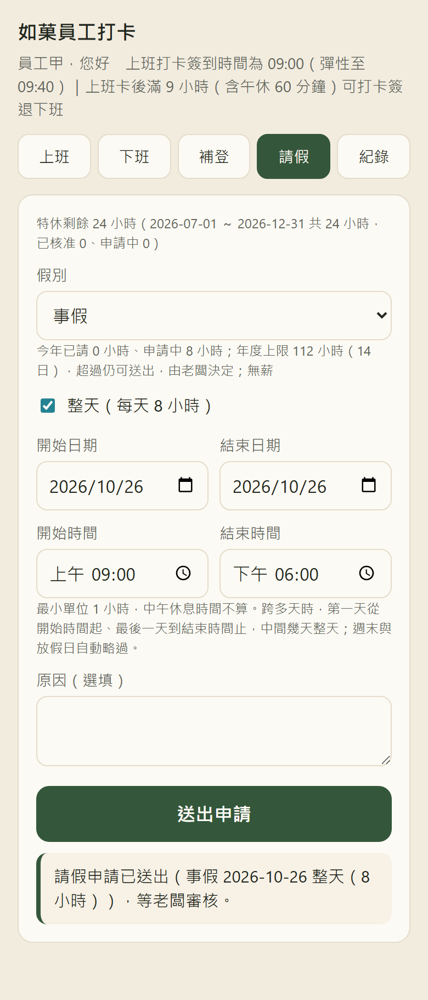
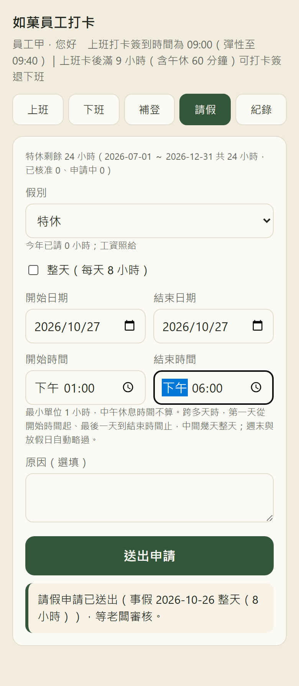
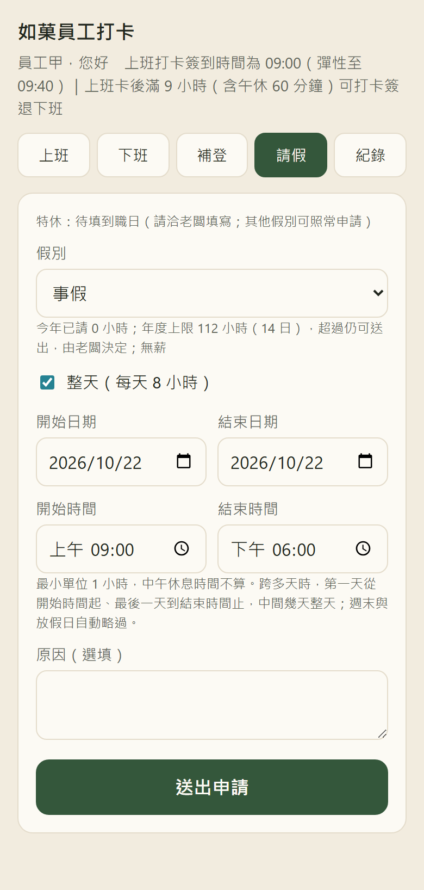
天數與薪資依勞基法與勞工請假規則。有疑問請問老闆。
| 假別 | 一年可請 | 薪資 | 提醒 |
|---|---|---|---|
| 特休 | 依到職年資（週年制） | 全薪 | 滿 6 個月才有；請假頁會顯示剩餘 |
| 事假 | 14 日 | 無薪 | 超過仍可送出，由老闆決定 |
| 病假 | 30 日 | 半薪 | 超過 3 天要附證明 |
| 婚假 | 14 日 | 全薪 | — |
| 喪假 | 依親屬關係，最多 8 日 | 全薪 | — |
| 公假 | 依法令規定 | 全薪 | — |
| 生理假 | 每月 1 日；全年前 3 日不併入病假 | 半薪 | 同一個月第 2 天會送不出去，請改請「病假」；超過 3 日的部分併入病假 |
| 家庭照顧假 | 7 日 | 無薪 | 併入事假計算 |
點選單「我的紀錄」，往下滑到「請假」：看特休還剩幾小時、今年各假別已請幾小時，以及每一筆的狀態：申請中（老闆還沒看）、已核准、已駁回。
※ 右圖為測試資料示意，非真實出勤。
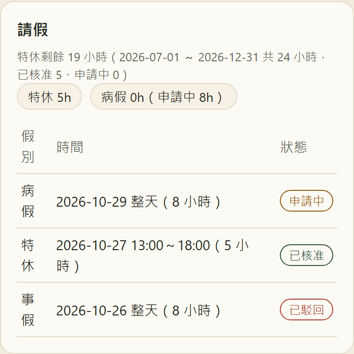
颱風天不用猜今天要不要上班，也不用自己請假。
人事行政總處公告臺中市全天停止上班，系統會自動把那一天當成放假。那天不用打卡，不會算缺卡，也不用另外請假。
公告只停上午或下午時，那天還是上班日，要照常打卡。只是系統那天不會發「還沒打卡」的提醒。
打卡失敗又無法補登、選單不見、看到不懂的訊息、對同意書或打卡方式有疑問：直接 LINE 或當面告訴老闆。
回報時請一起附上手機畫面截圖，處理最快。